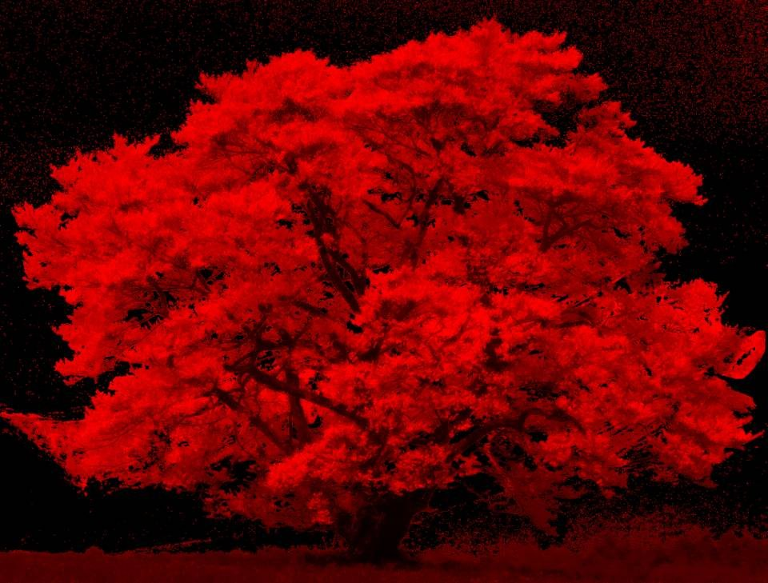
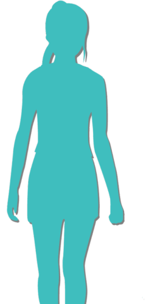
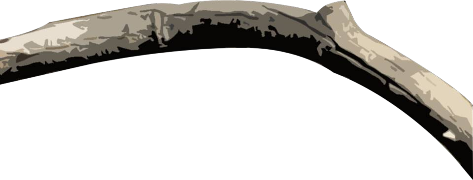
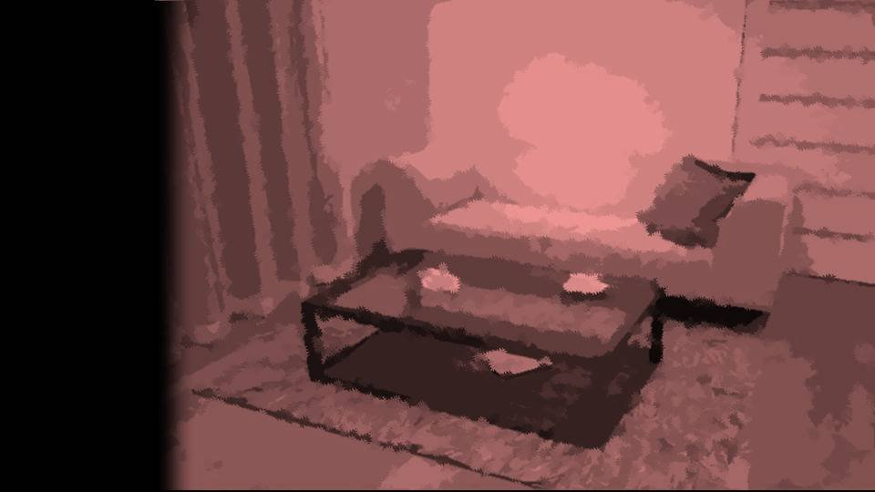
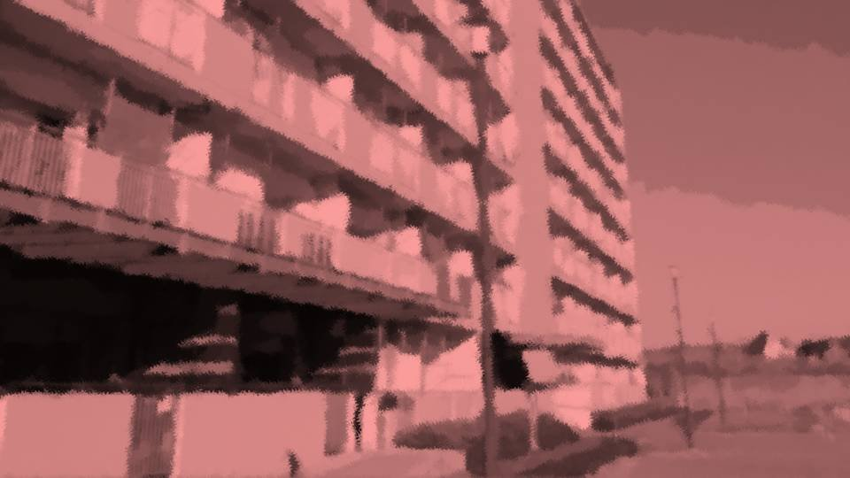

This scene is not unlocked yet in your progress
Cracks
"Ahaha! Wait for me, Haruka-chaaan!"
"Natsumi! The butterfly went that way!"
"Natsumi! The butterfly went that way!"

Shiyo 788, April 8. A peaceful day.
This time of year, Motoki-cho gets crowded with cherry-blossom viewers on days off.
So among Motoki-cho locals, it's not unusual to take paid leave on a weekday, when there are relatively few people, and enjoy the blossoms.
I hear some companies even set aside a spring break they call 'cherry-blossom leave.'
This time of year, Motoki-cho gets crowded with cherry-blossom viewers on days off.
So among Motoki-cho locals, it's not unusual to take paid leave on a weekday, when there are relatively few people, and enjoy the blossoms.
I hear some companies even set aside a spring break they call 'cherry-blossom leave.'
"Those two sure are slow..."
Akane and Mifuyu-san had gone to buy food at the stalls, but...
Akane and Mifuyu-san had gone to buy food at the stalls, but...

"Hahaha, now, now, let's just be patient and wait."
Eiichiro was relishing cold takoyaki from a stall, cheeks stuffed. [TN: takoyaki: fried batter balls with octopus inside]
This guy eats everything like it's delicious.
Eiichiro was relishing cold takoyaki from a stall, cheeks stuffed. [TN: takoyaki: fried batter balls with octopus inside]
This guy eats everything like it's delicious.
I lay back on the picnic sheet and looked up at the spring sky.
Every so often, cherry-pink petals mixed into the sky blue.
At the edge of my vision, swaying a little from the alcohol, the branches of the goshinboku came into view.
Every so often, cherry-pink petals mixed into the sky blue.
At the edge of my vision, swaying a little from the alcohol, the branches of the goshinboku came into view.

The goshinboku...
Come to think of it, it really is a strange cherry tree.
This big cherry tree has supposedly only been growing for about 60 years.
You can see 60-year-old cherry trees all over a town like Motoki-cho.
Come to think of it, it really is a strange cherry tree.
This big cherry tree has supposedly only been growing for about 60 years.
You can see 60-year-old cherry trees all over a town like Motoki-cho.
But this goshinboku alone is strangely big, and it has the dignity of an old tree.
As if it had looked like this from the moment it first grew.
No, I've heard that was actually the case.
They say this goshinboku suddenly appeared here one day, looking just like this.
As if it had looked like this from the moment it first grew.
No, I've heard that was actually the case.
They say this goshinboku suddenly appeared here one day, looking just like this.
Lately, it seems Motoki-cho means to make the cherry blossoms a tourist attraction and draw in lots of tourists.
It's still a small town, but the population will probably grow before long.
It's still a small town, but the population will probably grow before long.

"Hey, hey, Daddy! Give me some juice!"
"Oh, sure, sure."

"Mister, me too!"
"Here you go!"
Eiichiro handed paper cups of juice to the two kids.
"Here you go!"
Eiichiro handed paper cups of juice to the two kids.
"Ah!"
But the two of them both reached for the same juice, and the paper cup fell upside down onto the ground.
"My juice..."
Staring sadly at the spilled juice was Haruka-chan.
And staring blankly at Haruka-chan was Natsumi.
Natsumi had cannily kept hold of the other juice.
But the two of them both reached for the same juice, and the paper cup fell upside down onto the ground.
"My juice..."
Staring sadly at the spilled juice was Haruka-chan.
And staring blankly at Haruka-chan was Natsumi.
Natsumi had cannily kept hold of the other juice.

"Uuuu...

Waaaaah!!"

"Now, now, Haruka, no need to cry like that. Look, there's still lots more."
Eiichiro promptly handed another juice to Haruka-chan.
But even so, Haruka-chan still looked glum.
Eiichiro promptly handed another juice to Haruka-chan.
But even so, Haruka-chan still looked glum.
"But poor Mr. Juice..."
Oh, so that's it...
Taking pity on spilled juice is such a childlike idea.
Just then, lively voices rose from the direction of the park entrance.
Oh, so that's it...
Taking pity on spilled juice is such a childlike idea.
Just then, lively voices rose from the direction of the park entrance.
"We're starting a picture-story show now! We've got candy and balloons too!"
Hearing that, the tears vanished from Haruka-chan's eyes, and her face lit right up.
"Daddy! Give me 100 yen! I'm going to the picture-story show!"
Hearing that, the tears vanished from Haruka-chan's eyes, and her face lit right up.
"Daddy! Give me 100 yen! I'm going to the picture-story show!"
"Me too, me too!"
The two of them begged for pocket money, and we each pressed 100 yen into their hands.
The two of them begged for pocket money, and we each pressed 100 yen into their hands.
"Natsumi, let's go!"
"Yeah! Oh, Daddy, hold this for me!"
"Yeah! Oh, Daddy, hold this for me!"
The two of them handed back the juice they had finally gotten and ran off toward the picture-story show.
"Haruka-chan's really managing to be a good big sister to Natsumi."
"Well, they really are related by blood, after all.
Mifuyu-chan's really happy too. She says even if it's through adoption, she got a happiness close to the one she wished for."
"Yeah..."
"Yeah..."
"Ryoji, it still doesn't sit right with you, does it..."
"Honestly... Well, things have turned out fine now, but I still think about it sometimes. Haruka-chan... what if she had stayed our daughter."
"Does this mean I should be saying sorry..."
"Honestly... Well, things have turned out fine now, but I still think about it sometimes. Haruka-chan... what if she had stayed our daughter."
"Does this mean I should be saying sorry..."
"No, we chose what we thought was best, too.
But Akane probably feels the same as me. That she wanted to keep Haruka-chan with her.
Of course, Akane wouldn't say anything like that, even to me."
"............"
"Well, still, when I think about how close Akane and Mifuyu-san are... I do think it was for the best."
"............"
"Well, still, when I think about how close Akane and Mifuyu-san are... I do think it was for the best."
"Just hearing you say that means a lot."
"Hey, while we're on the subject, there's something I want to ask... What would happen if Haruka-chan were taken away from Mifuyu-san?"
"Huh?"
"Hypothetically."
"Hey, while we're on the subject, there's something I want to ask... What would happen if Haruka-chan were taken away from Mifuyu-san?"
"Huh?"
"Hypothetically."
"I don't even want to imagine it... It wouldn't stop at her falling apart."
"Figured."
"Honestly, sometimes I find Mifuyu-chan a little scary. Mifuyu-chan won't let go of the happiness she has now, no matter what, and if it ever looked like she might have to, there's no telling what she'd do."
"Well, but isn't that just how mothers are?"
"Is it..."
"Figured."
"Honestly, sometimes I find Mifuyu-chan a little scary. Mifuyu-chan won't let go of the happiness she has now, no matter what, and if it ever looked like she might have to, there's no telling what she'd do."
"Well, but isn't that just how mothers are?"
"Is it..."
"No, my bad, Eiichiro, bringing up gloomy stuff at a time like this. Let's drop it."
"No, it's fine. This is me and Ryoji we're talking about. Things like this, we'll keep talking over from now on, always, and―"
"No, it's fine. This is me and Ryoji we're talking about. Things like this, we'll keep talking over from now on, always, and―"


"Sorry to keep you waiting! The stalls were all so crowded..."
"Where are Haruka and the others?"
"A picture-story show came by a minute ago, so it looks like they went over there."
"Honestly, Eiichiro-san, I told you not to take your eyes off Haruka..."
"Where are Haruka and the others?"
"A picture-story show came by a minute ago, so it looks like they went over there."
"Honestly, Eiichiro-san, I told you not to take your eyes off Haruka..."
"Oh, that's right. Sorry, I'll go right now."
Eiichiro quickly put on his shoes and hobbled off toward the kids.
"Hey, Akane, I gave Natsumi 100 yen just now. Give me 100 yen."

"What are you talking about, over a measly 100 yen..."
"On my allowance, even 100 yen is a precious asset..."
"Then you could save some money instead of eating and drinking this much just because we're out viewing the blossoms."
"Hey, the blossom-viewing money was supposed to come out of the household budget anyway, right?"
"On my allowance, even 100 yen is a precious asset..."
"Then you could save some money instead of eating and drinking this much just because we're out viewing the blossoms."
"Hey, the blossom-viewing money was supposed to come out of the household budget anyway, right?"
"If you'd cooperate even a little on things like that, I'd think about it..."
"Geez... Fine, I'll go look after Natsumi and the others too. You two take it easy here."
"My, Ryoji-kun, how thoughtful. Yes, yes, it's little things like that that change how a wife feels. Here, 100 yen for the errand."
"Geez... Fine, I'll go look after Natsumi and the others too. You two take it easy here."
"My, Ryoji-kun, how thoughtful. Yes, yes, it's little things like that that change how a wife feels. Here, 100 yen for the errand."

"Hehehe, since we're here, let's enjoy the blossom viewing to the fullest, Akane."
"Ryoji-kun, take your tiiiiiiiiime, please."
So it was true that once you're married, the woman holds the power.
"Ryoji-kun, take your tiiiiiiiiime, please."
So it was true that once you're married, the woman holds the power.
Just as I went to put on my shoes, I saw Natsumi and Haruka-chan running toward us from the picture-story show.
"Mommyyy! Look, look! A balloon!"
"Haruka-chan and me match!"
Beyond the two bobbing balloons, I could see Eiichiro running along, wheezing.
"Mommyyy! Look, look! A balloon!"
"Haruka-chan and me match!"
Beyond the two bobbing balloons, I could see Eiichiro running along, wheezing.
Eiichiro, with that build and alcohol in him, was going to have a hard time just keeping up with the kids.
No, even before that, he has a bad leg and always walks as if he's dragging it.
No, even before that, he has a bad leg and always walks as if he's dragging it.
Come to think of it, why does he have a bad leg...?
I asked once back in high school, and he said he'd hurt it as a kid.
I never heard the details, but if it hasn't gotten better even at his age, it must have been a pretty serious injury.
I asked once back in high school, and he said he'd hurt it as a kid.
I never heard the details, but if it hasn't gotten better even at his age, it must have been a pretty serious injury.
―Just then.
As if tearing away the calm weather we'd had until then, a strong wind began to rage.
As if tearing away the calm weather we'd had until then, a strong wind began to rage.
"Eek!"
"What's with this wind!"
Natsumi and the others' paper cups of juice tipped over, and the food we had bought at the stalls was about to be blown away.
Akane and Mifuyu-san were down on all fours, holding everything down so it wouldn't fly off.
"What's with this wind!"
Natsumi and the others' paper cups of juice tipped over, and the food we had bought at the stalls was about to be blown away.
Akane and Mifuyu-san were down on all fours, holding everything down so it wouldn't fly off.
"Ah!"
For an instant, something fluffy and cherry-pink passed in front of my eyes.
That was...
That was...
a balloon.
Caught by the wind, the balloon was drawn toward the goshinboku and snagged on one of its branches.
Caught by the wind, the balloon was drawn toward the goshinboku and snagged on one of its branches.
"Waaaah!! My balloon!!"
So that balloon was Natsumi's.
In wind like this, it couldn't be helped that it blew away.
Once the wind died down, I'd just buy her another one.
So that balloon was Natsumi's.
In wind like this, it couldn't be helped that it blew away.
Once the wind died down, I'd just buy her another one.

"Natsumi-chan, don't cry. Look, I'll go get it for you."
"Really...?"
"Yeah! Believe it or not, I climbed lots of trees when I was a kid!"
"Really...?"
"Yeah! Believe it or not, I climbed lots of trees when I was a kid!"
Eiichiro said that and hobbled off toward the goshinboku.
No, hold on, even if he did climb trees as a kid, isn't that impossible with that build...?
Besides, he can't even move one of his legs properly.
Paying no mind to my worry, Eiichiro climbed the goshinboku with unusual nimbleness.
Besides, he can't even move one of his legs properly.
Paying no mind to my worry, Eiichiro climbed the goshinboku with unusual nimbleness.

"Hey, Eiichiro, don't push yourself! Come down! We can just buy another balloon!"
"Hup! I may not look it, but I grew up in the mountains of the Arata settlement! Hah! Climbing a tree is nothing!"
As if to defy my worry, Eiichiro reached the branch where the balloon was caught in no time at all.
He might have that build, but his tree-climbing skills were apparently the real thing.
Eiichiro stretched his hand out as far as he could toward the balloon.
"Hup! I may not look it, but I grew up in the mountains of the Arata settlement! Hah! Climbing a tree is nothing!"
As if to defy my worry, Eiichiro reached the branch where the balloon was caught in no time at all.
He might have that build, but his tree-climbing skills were apparently the real thing.
Eiichiro stretched his hand out as far as he could toward the balloon.

But the goshinboku's branch began to creak and groan.
"Hey, Eiichiro, get down here, quick! It's going to break!"
"Just a little more... I've almost got it."
I happened to look directly below Eiichiro, and...
"Hey, Eiichiro, get down here, quick! It's going to break!"
"Just a little more... I've almost got it."
I happened to look directly below Eiichiro, and...
"Natsumi! Get out of the way!"
If Eiichiro fell, Natsumi would be crushed beneath him.
I hurried toward Natsumi, but―
If Eiichiro fell, Natsumi would be crushed beneath him.
I hurried toward Natsumi, but―
"All right! Got it!"
―At that moment, an eerie sound rang out, the kind that made you want to cover your ears.
Like an old iron door being moved, or like a huge, rusted wheel being turned.
The sound echoed throughout Central Park.
Like an old iron door being moved, or like a huge, rusted wheel being turned.
The sound echoed throughout Central Park.
For a moment the sound stole my attention, but right after, Eiichiro came into view.
Whether he flinched at that eerie sound or was caught by the strong wind, I couldn't tell.
Eiichiro lost his grip on the goshinboku, and―
That moment was like watching something in slow motion.
Whether he flinched at that eerie sound or was caught by the strong wind, I couldn't tell.
Eiichiro lost his grip on the goshinboku, and―
That moment was like watching something in slow motion.

Right beside the falling Eiichiro was an iron fence with pointed tips.
Eiichiro twisted his body as if drawn toward the fence―
Hey... hey, wait a minute.
Like that, onto your neck.
You, your neck, the fence―
Eiichiro twisted his body as if drawn toward the fence―
Hey... hey, wait a minute.
Like that, onto your neck.
You, your neck, the fence―

I ran to the one covered in Eiichiro's blood, to Natsumi.
Without a word, I just held her tight.
I can't let Natsumi see this place anymore...
Don't look... anymore...!
Natsumi didn't seem to understand what had happened.
Without a word, I just held her tight.
I can't let Natsumi see this place anymore...
Don't look... anymore...!
Natsumi didn't seem to understand what had happened.
"Hey, Daddy, it's dangerous."

Suddenly, Natsumi shoved me hard in the chest.

At that instant, a big tree branch came falling down.
Into the gap between me and Natsumi, barely 30 cm wide.
Into the gap between me and Natsumi, barely 30 cm wide.
"Natsumi... What's gotten into you..."
This was the branch Eiichiro had climbed.
It must have broken just now, unable to bear Eiichiro's weight.
This was the branch Eiichiro had climbed.
It must have broken just now, unable to bear Eiichiro's weight.
Which meant that, by rights, Eiichiro should have landed right where Natsumi was.
And yet Eiichiro had landed in a slightly different spot.
And yet Eiichiro had landed in a slightly different spot.
Eiichiro, you twisted yourself to save Natsumi.
And Natsumi... what on earth happened to you?
Did she read the situation and decide? Could 4-year-old Natsumi do something like that?
And Natsumi... what on earth happened to you?
Did she read the situation and decide? Could 4-year-old Natsumi do something like that?

Mifuyu-san didn't seem to understand the situation either.
No, she probably understood it, but her mind couldn't keep up.
Mifuyu-san and I got into the ambulance with Eiichiro, who no longer moved.
We had Akane stay at the park for Natsumi and Haruka-chan and come to the hospital by taxi.
No, she probably understood it, but her mind couldn't keep up.
Mifuyu-san and I got into the ambulance with Eiichiro, who no longer moved.
We had Akane stay at the park for Natsumi and Haruka-chan and come to the hospital by taxi.
"That ambulance is dangerous?"
"Huh?"
Natsumi had no chance to answer before the ambulance doors were shut.
Natsumi had no chance to answer before the ambulance doors were shut.

"That girl...
That girl, she...!"
"Hey, Mifuyu-san! Calm down!"
"Hey, Mifuyu-san! Calm down!"

"That girl did it to Eiichiro-san!
What is that girl! That girl... is she a witch!?
Ryoji-san, you saw it, didn't you!? How Eiichiro-san's body twisted as he fell!
That girl did something, didn't she!"
"The way he was falling, Natsumi would have ended up under Eiichiro! That's why Eiichiro...!"
"The way he was falling, Natsumi would have ended up under Eiichiro! That's why Eiichiro...!"
"And what was that just now!? The ambulance is dangerous?
That girl did something to this ambulance too, didn't she!
And that weird sound earlier, she scared Eiichiro-san with it so he'd fall out of the tree, didn't she!
Let me out!
Stop the car, now!"
"Stop it, Mifuyu-san!"
"Stop it, Mifuyu-san!"
"Don't tell me... you, too...?
Stop the car already! We'll all be killed!"
I desperately held Mifuyu-san down.
In the middle of it, the view through the windshield leapt out at me.
A truck, weaving toward us.
In the middle of it, the view through the windshield leapt out at me.
A truck, weaving toward us.
The truck driver had apparently been driving drunk.
Nobody was seriously hurt in the accident.
But for Mifuyu-san's heart, it was enough to deal one more blow.
Nobody was seriously hurt in the accident.
But for Mifuyu-san's heart, it was enough to deal one more blow.
Next to Eiichiro, sprawled on the ambulance floor, Mifuyu-san huddled close.
"Eiichiro-san... you poor thing. Killed by a witch... you poor, poor thing... Haruka―I have to save her. I won't let Haruka become the witch's prey..."
"Eiichiro-san... you poor thing. Killed by a witch... you poor, poor thing... Haruka―I have to save her. I won't let Haruka become the witch's prey..."
A month later...
"Ryoji-kun, something terrible's happened!"


Akane hurriedly brought over a sheet of paper.

"This was in our mailbox...!"
To Akane,
I can no longer stay in Motoki-cho.
It is far too painful for me.
Today, I am leaving Motoki-cho with Haruka.
Thank you for everything.
Goodbye.
Mifuyu
I can no longer stay in Motoki-cho.
It is far too painful for me.
Today, I am leaving Motoki-cho with Haruka.
Thank you for everything.
Goodbye.
Mifuyu
We took Natsumi with us and hurried to the apartment building where Mifuyu-san lived.

When we arrived, Mifuyu-san and Haruka-chan were just about to get into a car.
"Haruka-chan!"
"Natsumi!"
"Come on, Haruka, we're going."
"No! Haruka-chan, don't go!"
"Natsumiiii!"
As if to tear apart the two small screams, Mifuyu-san shut the car door.
And then Mifuyu-san drove off without even meeting our eyes.
"Natsumiiii!"
As if to tear apart the two small screams, Mifuyu-san shut the car door.
And then Mifuyu-san drove off without even meeting our eyes.
Holding the wailing Natsumi, all we could do was watch the car go.
"Aaaaah! Haruka-chaaan!"
Mifuyu-san and Akane―and Natsumi and Haruka-chan: a crack had formed between them.
"Aaaaah! Haruka-chaaan!"
Mifuyu-san and Akane―and Natsumi and Haruka-chan: a crack had formed between them.
Read ✓ Next: Two Years Later →